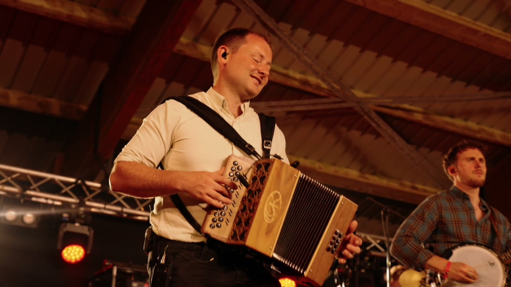

LIVE IN DUBLIN · AFTERMOVIE
Larry Fleet
The energy of the room, the performance and the crowd — brought together in a show recap.
Live show films. Backstage stories. Content that takes your audience along for the ride.


Choose an artist to explore their live films and tour content.
 2 filmsLarry FleetConcert aftermovieView videos
2 filmsLarry FleetConcert aftermovieView videos The energy of the room, the performance and the crowd — brought together in a show recap.
Larry Fleet performing live in Dublin, Ireland.
 5 films · 32 photosStephen Wilson JrTour films & photographyView collection
5 films · 32 photosStephen Wilson JrTour films & photographyView collection Performance, backstage moments and the connection with the crowd in Zurich, Switzerland.
A Halloween live film capturing Stephen Wilson Jr. and the atmosphere of the show.
Shot during the gig, edited on site and delivered the same night.
A second show, a different room, another story from the road.
Zurich, Germany and more from the road. Tap any frame to explore the photographs.
 4 films · 7 photosNathan CarterFilms & live photographyView collection
4 films · 7 photosNathan CarterFilms & live photographyView collection Produced and edited by Andrew Heeney, bringing together the multi-camera footage and completing the colour grade. Andrew also operated one of the cameras.
Live performance coverage that puts the audience back in the moment.
Nathan Carter live in Belfast — a quick-turnaround edit from the show.
Nathan Carter on stage, with the performance and festival atmosphere captured in a live show film.
TLT, Swords Castle and Farmers Bash. Tap a photograph to view it in full.
Explore the photography story ↗
1 filmThe Tumbling PaddiesLive festival highlightsView videosPerformance, crowd and festival atmosphere at Cowboys and Heroes.
 1 filmRudimentalLive in DublinView videos
1 filmRudimentalLive in DublinView videos Rudimental live in Dublin — performance, crowd and the atmosphere of the show.
Performance clips and show recap films that capture the artist, the crowd and the atmosphere.
Backstage moments, soundcheck, travel and life on the road — a closer look for the people following along.
Vertical edits for Reels, TikTok and Shorts, with formats and turnaround agreed before the first show.

I’m a filmmaker based in Ireland, creating content for artists, events and brands. My artist work includes Larry Fleet, Stephen Wilson Jr and Nathan Carter.
Coming to Europe? Share your itinerary. Whether you need coverage for one show or want to discuss a run of dates, we can build the content plan around your route.
Let’s talk about your tour ↗Artist, dates, cities and what your team needs.
Shows, access, deliverables, travel and turnaround.
Content supplied in the formats and on the schedule we agree.
Send your artist, dates, cities and the content you need. I’ll come back with availability and a tailored quote. Travel and delivery timings are agreed around your itinerary.